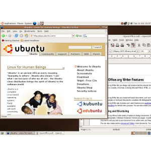

Kubuntu 5.10
It's been six long months. But Kubuntu is back, and better than ever.
Kubu-what?
Kubuntu is a free Linux-based operating system for your Intel, AMD, or PPC computer. If you want a Linux system that Just Works, or if you’re tired of Windows or OS X and feeling adventurous, give Kubuntu a spin. We think you’ll be impressed.
Standing on the shoulders of
Kubuntu builds on the latest KDE3.4.2 operating environment. Despite the silly name, KDE provides elegant and powerful software for everything from instant messaging to image viewing, from system configuration to Solitaire.
The best of Free Software
Kubuntu includes the best applications the Free Software world has to offer. Firefox for Web browsing. Kontact for e-mail, contacts, calendars, and to-do lists. Krita for image editing. And the new OpenOffice.org 2.0 for word processing, spreadsheets, and presentations.
You know when people say “And there’s much, much more”? Well with Kubuntu, it’s actually true. You can choose from hundreds of software packages in the Kubuntu software catalogue, and download and install them with the click of a button. And it’s all completely free.
Customize to your heart’s content
Want a personal look and feel for your desktop? Choose from dozens of included screensavers. Mix and match themes for the look of windows and buttons. Get more themes from art.ubuntu.com and kde-look.org. And customize your Applications menu with the new Menu Editor.
Automatic Updates
Software updates are automatically announced with a small red icon. Kubuntu will display, review and install them easily, ensuring your software is up to date and secure.
PDFs just got faster
Kubuntu now loads your PDF, PostScript, and DjVu documents faster. Search text, select and copy it, view thumbnails and two-page views, all in a speedy and uncluttered interface.
Introducing OpenOffice.org 2
Create, edit and save word processor documents with Writer, spreadsheets with Calc and presentations with Impress. Easily share files with your friends who have MS Office or Staroffice. Create PDFs with a single click. OpenOffice.org 2 now includes simple and easy database creation with Base.
Watch movies on your desktop or in your browser
Enjoy movies and video clips with the Kaffine media player, built on the powerful GStreamer multimedia framework. Watch trailers and videos from inside Firefox with the new Totem plugin.
Burn audio CDs with Serpentine
Just drag your ogg, mp3 or other audio files and then click to burn them. See the artist and track name. Don't guess when the disc is full, just look.
Manage your personal information
Control your name, password and other personal information from one location. Simply launch About Me from System-->Preferences
Bring old machines to life
Using Linux Terminal Server Project on Kubuntu, bring those old machines back as thin clients for your office or school.
Use your camera, portable media player or USB drive
Just plug it in and import your pictures, move files or load up some tunes. And hey, no extra software to install!
Your system, your way, easier
Sometimes you need to tweak, so enjoy a few new ways such as starting and stop services with a single click. Or seeing all your harddrives and controlling the boot order.
So what’s the catch?
There is none. Kubuntu will always be free of charge. Releases are scheduled every six months. And if you don’t want to upgrade, security updates are provided for each version for 18 months after its release.
If you're still not sure, try out the Kubuntu LiveCD and test Kubuntu without changing anything on your computer. Even if you decide to stay with Windows, the LiveCD also includes Windows versions of OpenOffice.org, Firefox, and Thunderbird,so you can get a taste of what Free Software is about.